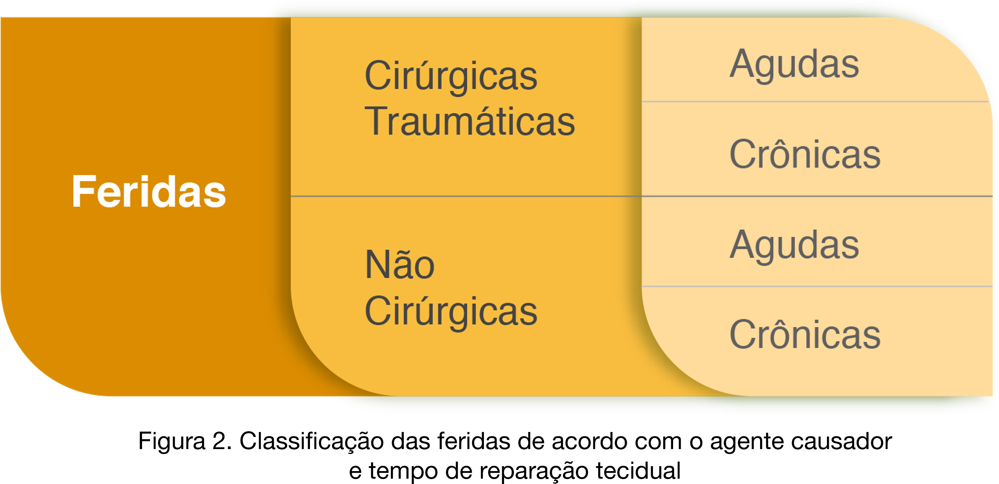

<div class="jan">
    
</div>

<script>
    $(() => {
        $('.jan').hide().click(() => { $('.jan').fadeOut() });
        $('.botao').css('cursor', 'pointer').click(() => {
            $('.jan').css('cursor', 'pointer').fadeIn();
        })
    })
</script>


animate__animated animate__backInLeft


animate__animated animate__backInRight